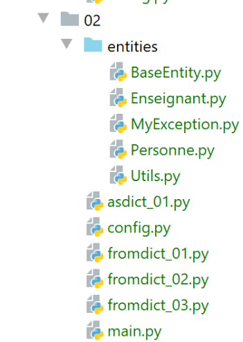

13. Les classes génériques [BaseEntity] et [MyException]
Nous définissons maintenant deux classes que nous utiliserons régulièrement par la suite.

13.1. La classe MyException
La classe [MyException] (MyException.py) fournit une classe d'exceptions propriétaire :
| # une classe d'exception propriétaire dérivant de [BaseException]
class MyException(BaseException):
# constructeur
def __init__(self: object, code: int, message: str):
# parent
BaseException.__init__(self, message)
# code erreur
self.code = code
# toString
def __str__(self):
return f"MyException[{self.code}, {super().__str__()}]"
# getter
@property
def code(self) -> int:
return self.__code
# setter
@code.setter
def code(self, code: int):
# le code d'erreur doit être un entier positif
if isinstance(code, int) and code > 0:
self.__code = code
else:
# exception
raise BaseException(f"code erreur {code} incorrect")
|
Notes
- ligne 2 : la classe [MyException] dérive de la classe prédéfinie [BaseException] ;
- ligne 4 : le constructeur accepte deux paramètres :
- [code] : un code d'erreur entier ;
- [message] : un message d'erreur ;
- ligne 6 : on passe le message d’erreur à la classe parent ;
- lignes 14-27 : l'attribut [code] est manipulé via un getter / setter ;
- lignes 23-24 : la validité de l'attribut [code] est vérifiée : il faut que ce soit un entier >0 ;
13.2. La classe [BaseEntity]
La classe [BaseEntity] sera la classe parent de la plupart des classes que nous créerons pour encapsuler des informations sur un objet. Dans la suite nous utiliserons principalement deux types de classes :
- des classes qui n’ont pour but que d’encapsuler au même endroit des informations sur un même objet. Celles-ci n’auront pas de comportements (méthodes) autres que des getters / setters et une fonction d’affichage (str). S’il y a N objets à gérer, ces classes sont instanciées N fois. [BaseEntity] sera la classe parent de ce type de classes ;
- des classes dont le rôle principal est d’encapsuler des méthodes et très peu d’informations. Ces classes ne seront instanciées qu’une fois (singleton). Leur rôle est d’implémenter les algorithmes d’une application ;
La classe [BaseEntity] est la suivante :
| # imports
import json
import re
from MyException import MyException
class BaseEntity(object):
# propriétés exclues de l'état de la classe
excluded_keys = []
# propriétés de la classe
@staticmethod
def get_allowed_keys() -> list:
# id : identifiant de l'objet
return ["id"]
# toString
def __str__(self) -> str:
return self.asjson()
# getter
@property
def id(self) -> int:
return self.__id
# setter
@id.setter
def id(self, id):
# l'id doit être un entier >=0
try:
id = int(id)
erreur = id < 0
except:
erreur = True
# erreur ?
if erreur:
raise MyException(1, f"L'identifiant d'une entité {self.__class__} doit être un entier >=0")
else:
self.__id = id
def fromdict(self, state: dict, silent=False):
…
def set_value(self, key: str, value, new_attributes) -> dict:
…
def asdict(self, included_keys: list = None, excluded_keys: list = []) -> dict:
…
def asjson(self, excluded_keys: list = []) -> str:
…
def fromjson(self, json_state: str):
…
|
Commentaires
- l’objectif de la classe [BaseEntity] est de faciliter les conversions Objet / Dictionnaire et Objet / jSON. On offre ainsi les méthodes suivantes :
- [asdict] : rend le dictionnaire des propriétés de l’objet ;
- [fromdict] : construit un objet à partir d’un dictionnaire ;
- [asjson] : rend la chaîne jSON de l’objet comme le fait la fonction [str] ;
- [fromjson] : construit un objet à partir de sa chaîne jSON ;
- la classe [BaseEntity] est destinée à être dérivée et non à être utilisée telle quelle ;
- lignes 22-25 : la classe [BaseEntity] n’a qu’une propiété, l’entier [id]. Cette propriété est l’identifiant de l’objet. Dans la pratique, il est souvent utile de pouvoir différentier les instances d’une même classe. Nous le ferons avec cette propriété, unique pour une instance. Par ailleurs, les objets proviennent souvent de bases de données où ils sont identifiés par une clé primaire, un entier généralement. Dans ces cas, [id] sera la clé primaire ;
- lignes 27-40 : le setter de la propriété [id]. On vérifie que c’est un entier >=0. Si ce n’est pas le cas, une exception de type [MyException] est lancée (ligne 39) ;
- ligne 10 : [excluded_keys] est un attribut de classe et non d’instance. Ainsi on écrira [BaseEntity.excluded_keys]. Cet attribut de classe est une liste contenant les propriétés de classe qui ne participent pas aux conversions Objet / Dictionnaire et Objet / jSON ;
- lignes 12-16 : [get_allowed_keys] rend la liste des propriétés de la classe. Dans une conversion Dictionnaire -> Objet ou jSON -> Objet, on n’acceptera que les clés présentes dans cette liste. Chaque classe dérivant la classe [BaseEntity] aura à redéfinir cette liste ;
Il faut comprendre ici que les propriétés et fonctions de la classe [BaseEntity] sont accessibles aux classes dérivées de [BaseEntity]. C’est le point important à comprendre.
Nous allons détailler le code de la classe [BaseEntity]. Il est assez avancé. Le lecteur débutant pourra se contenter de lire le rôle de chaque fonction sans s’apesantir sur son code.
13.2.1. La méthode [BaseEntity.fromdict]
13.2.1.1. Définition
La méthode [fromdict] permet d’initialiser un objet [BaseEntity] ou dérivé à partir d’un dictionnaire :
| def fromdict(self, state: dict, silent=False):
# on met à jour l'objet
# clés autorisées
allowed_keys = self.__class__.get_allowed_keys()
# parcourt des clés de state
for key, value in state.items():
# la clé est-elle autorisée ?
if key not in allowed_keys:
if not silent:
raise MyException(2, f"la clé {key} n'est pas autorisée")
else:
# on essaie d'affecter la valeur à la clé
# on laisse remonter l'éventuelle exception
setattr(self, key, value)
# on rend l'objet
return self
|
Commentaires
- ligne 1 : la fonction reçoit en paramètre le dictionnaire [state] à partir duquel l’objet courant va être initialisé ;
- ligne 4 : on fait appel à la fonction statique [get_allowed_keys] de la classe qui a appelé la fonction [fromdict]. Si on a affaire à une classe dérivée de [BaseEntity] et que cette classe dérivée a redéfini la fonction statique [get_allowed_keys] alors c’est la fonction [get_allowed_keys] qui est appelée. Chaque classe dérivée redéfinit cette fonction statique pour y déclarer ses propriétés ;
- ligne 6 : on parcourt les clés et valeurs du dictionnaire [state] ;
- ligne 8 : si la clé [key] ne fait pas partie des propriétés de la classe, alors soit :
- on l’ignore ;
- on lance une exception (ligne 10). Le développeur indique ce qu’il souhaite en passant le bon paramètre [silent] (ligne 1). La valeur par défaut de [silent] fait qu’une exception est lancée si on tente d’initialiser l’objet avec une propriété qu’il n’a pas ;
- ligne 14 : si la clé fait partie des propriétés de l’objet, alors on l’affecte à l’objet [self] à l’aide de la fonction prédéfinie [setattr] ;
- ligne 16 : la fonction rend l’objet initialisé ;
13.2.1.2. Exemples
13.2.1.2.1. La classe [Utils]
La classe [Utils] (Utils.py) est la suivante :
| class Utils:
# méthode statique
@staticmethod
def is_string_ok(string: str) -> bool:
# string est-elle une chaîne
erreur = not isinstance(string, str)
if not erreur:
# la chaîne est-elle vide ?
erreur = string.strip() == ''
# résultat
return not erreur
|
Elle définit aux lignes 3-11, une méthode statique qui rend un booléen vrai si son paramètre [str] est une chaîne de caractères non vide ;
13.2.1.2.2. La classe [Personne]
La classe [Personne] (Personne.py) dérive de la classe [BaseEntity] :
| # imports
from BaseEntity import BaseEntity
from MyException import MyException
from Utils import Utils
# classe Personne
class Personne(BaseEntity):
# propriétés exclues de l'état de la classe
excluded_keys = []
# propriétés de la classe
# id : identifiant de la personne
# prénom : prénom de la personne
# nom : nom de la personne
# âge : âge de la personne
@staticmethod
def get_allowed_keys() -> list:
# id : identifiant de l'objet
return BaseEntity.get_allowed_keys() + ["nom", "prénom", "âge"]
# getters
@property
def prénom(self) -> str:
return self.__prénom
@property
def nom(self) -> str:
return self.__nom
@property
def âge(self) -> int:
return self.__âge
# setters
@prénom.setter
def prénom(self, prénom: str):
# le prénom doit être non vide
if Utils.is_string_ok(prénom):
self.__prénom = prénom.strip()
else:
raise MyException(11, "Le prénom doit être une chaîne de caractères non vide")
@nom.setter
def nom(self, nom: str):
# le prénom doit être non vide
if Utils.is_string_ok(nom):
self.__nom = nom.strip()
else:
raise MyException(12, "Le nom doit être une chaîne de caractères non vide")
@âge.setter
def âge(self, âge: int):
# l'âge doit être un entier >=0
erreur = False
if isinstance(âge, int):
if âge >= 0:
self.__âge = âge
else:
erreur = True
else:
erreur = True
# erreur ?
if erreur:
raise MyException(13, "L'âge doit être un entier >=0")
|
- ligne 8 : la classe [Personne] dérive de la classe [BaseEntity] ;
- lignes 8-65 : on a gardé l’essentiel de la classe [Personne] déjà rencontrée. Les différences sont les suivantes :
- la classe n’a plus de constructeur ;
- la classe utilise l’exception [MyException], exemple ligne 65 ;
- elle a une méthode statique, [get_allowed_keys], lignes 17-20, qui définit la liste de ses propriétés. Les propriétés propres à la classe [Personne] sont ajoutées à celles de la classe parent [BaseEntity] ;
- elle a une liste statique [excluded_keys] sur laquelle on reviendra ;
13.2.1.2.3. La classe [Enseignant]
La classe [Enseignant] (Enseignant.py) dérive de la classe [Personne] :
| # imports
from MyException import MyException
from Personne import Personne
from Utils import Utils
# classe Enseignant
class Enseignant(Personne):
# propriétés exclues de l'état de la classe
excluded_keys = []
# propriétés de la classe
# id : identifiant de la personne
# prénom : prénom de la personne
# nom : nom de la personne
# âge : âge de la personne
# discipline : discpline enseignée
@staticmethod
def get_allowed_keys() -> list:
# id : identifiant de l'objet
return Personne.get_allowed_keys() + ["discipline"]
# propriétés
@property
def discipline(self) -> str:
return self.__discipline
@discipline.setter
def discipline(self, discipline: str):
# la discipline doit être une chaîne non vide
if Utils.is_string_ok(discipline):
self.__discipline = discipline
else:
raise MyException(21, "La discipline doit être une chaîne de caractères non vide")
# méthode show
def show(self):
print(f"Enseignant[{self.id}, {self.prénom}, {self.nom}, {self.âge}]")
|
- ligne 8 : la classe [Enseignant] étend (ou dérive) la classe [Personne] ;
- lignes 18-21 : définissent la liste des propriétés de la classe ;
- lignes 37-38 : la méthode [show] affiche l’identité de l’enseignant ;
13.2.1.2.4. La configuration [config]
Les scripts d’exemples utilisent la configuration [config] suivante :
| def configure():
import os
# dossier du fichier de configuration
script_dir = os.path.dirname(os.path.abspath(__file__))
# chemins absolus des dossiers à mettre dans le syspath
absolute_dependencies = [
# la classe BaseEntity
f"{script_dir}/entities",
]
# mise à jour du syspath
from myutils import set_syspath
set_syspath(absolute_dependencies)
# on rend la configuration
return {}
|
- lignes 8-10 : les dossiers contenant les dépendances du projet ;
- lignes 14-15 : le Python Path est construit ;
- ligne 18 : on rend un dictionnaire vide (il n’y a pas d’autres configuration que celle du syspath) ;
13.2.1.2.5. Le script [fromdict_01]
Le script [fromdict_01] est le suivant :
| # on configure l'application
import config
config = config.configure()
# le syspath est configuré - on peut faire les imports
from Enseignant import Enseignant
# un enseignant
enseignant1 = Enseignant().fromdict({"id": 1, "nom": "lourou", "prénom": "paul", "âge": 56})
enseignant1.show()
|
- ligne 10 : on crée un objet [Enseignant] à partir d’un dictionnaire. Pour cela, on utilise le constructeur par défaut de la classe pour créer un objet [Enseignant] à laquel on applique la méthode [fromdict]. Il faut comprendre qu’ici la méthode [fromdict] exécutée est celle de la classe parent [BaseEntity]. En effet :
- la méthode [fromdict] est d’abord cherchée dans la classe [Enseignant]. Elle n’existe pas ;
- elle est ensuite cherchée dans la classe parent [Personne]. Elle n’existe pas ;
- elle est ensuite cherchée dans la classe parent [BaseEntity]. Elle existe ;
- ligne 11 : on affiche l’objet [Enseignant] ;
Les résultats sont les suivants :
| C:\Data\st-2020\dev\python\cours-2020\python3-flask-2020\venv\Scripts\python.exe C:/Data/st-2020/dev/python/cours-2020/python3-flask-2020/classes/02/fromdict_01.py
Enseignant[1, paul, lourou, 56]
Process finished with exit code 0
|
13.2.1.2.6. Le script [fromdict_02]
Le script [fromdict_02] est le suivant :
| # on configure l'application
import config
config = config.configure()
# le syspath est configuré - on peut faire les imports
from Enseignant import Enseignant
# un enseignant
enseignant1 = Enseignant().fromdict({"id": 1, "nom": "lourou", "prénom": "", "âge": 56})
enseignant1.show()
|
- ligne 10 : on crée un enseignant avec un prénom vide. Cela doit créer une exception car la classe [Personne] n’accepte pas des prénoms vides. Cet exemple montre la différence entre un dictionnaire et un objet. Ce dernier peut vérifier la validité de ses propriétés, pas le dictionnaire ;
Les résultats sont les suivants :
| C:\Data\st-2020\dev\python\cours-2020\python3-flask-2020\venv\Scripts\python.exe C:/Data/st-2020/dev/python/cours-2020/python3-flask-2020/classes/02/fromdict_02.py
Traceback (most recent call last):
File "C:/Data/st-2020/dev/python/cours-2020/python3-flask-2020/classes/02/fromdict_02.py", line 10, in <module>
enseignant1 = Enseignant().fromdict({"id": 1, "nom": "lourou", "prénom": "", "âge": 56})
File "C:\Data\st-2020\dev\python\cours-2020\python3-flask-2020\classes\02/entities\BaseEntity.py", line 55, in fromdict
setattr(self, key, value)
File "C:\Data\st-2020\dev\python\cours-2020\python3-flask-2020\classes\02/entities\Personne.py", line 42, in prénom
raise MyException(11, "Le prénom doit être une chaîne de caractères non vide")
MyException.MyException: MyException[11, Le prénom doit être une chaîne de caractères non vide]
Process finished with exit code 1
|
13.2.1.2.7. Le script [fromdict_03]
Le script [fromdict_03] est le suivant :
| # on configure l'application
import config
config = config.configure()
# le syspath est configuré - on peut faire les imports
from Enseignant import Enseignant
# un enseignant
enseignant1 = Enseignant().fromdict({"id": 1, "nom": "lourou", "prénom": "albert", "âge": 56, "sexe": "M"})
enseignant1.show()
|
- ligne 10 : on crée un enseignant à partir d’un dictionnaire contenant une clé (sexe) qui n’appartient pas à la classe [Enseignant]. Une exception devrait alors être levée ;
Les résultats sont les suivants :
| C:\Data\st-2020\dev\python\cours-2020\python3-flask-2020\venv\Scripts\python.exe C:/Data/st-2020/dev/python/cours-2020/python3-flask-2020/classes/02/fromdict_03.py
Traceback (most recent call last):
File "C:/Data/st-2020/dev/python/cours-2020/python3-flask-2020/classes/02/fromdict_03.py", line 10, in <module>
enseignant1 = Enseignant().fromdict({"id": 1, "nom": "lourou", "prénom": "albert", "âge": 56, "sexe": "M"})
File "C:\Data\st-2020\dev\python\cours-2020\python3-flask-2020\classes\02/entities\BaseEntity.py", line 51, in fromdict
raise MyException(2, f"la clé [{key}] n'est pas autorisée")
MyException.MyException: MyException[2, la clé [sexe] n'est pas autorisée]
Process finished with exit code 1
|
13.2.1.2.8. Le script [fromdict_04]
Le script [fromdict_04] est une copie de [fromdict_03] à un détail près :
| # on configure l'application
import config
config = config.configure()
# le syspath est configuré - on peut faire les imports
from Enseignant import Enseignant
# un enseignant
enseignant1 = Enseignant().fromdict({"id": 1, "nom": "lourou", "prénom": "albert", "âge": 56, "sexe": "M"}, silent=True)
enseignant1.show()
|
- ligne 10 : on a utilisé le paramètre [silent=True] pour indiquer que si une clé du dictionnaire n’est pas une propriété de la classe [Enseignant], elle doit simplement être ignorée. Dans ce cas, aucune exception ne sera lancée ;
Les résultats sont les suivants :
| C:\Data\st-2020\dev\python\cours-2020\python3-flask-2020\venv\Scripts\python.exe C:/Data/st-2020/dev/python/cours-2020/python3-flask-2020/classes/02/fromdict_04.py
Enseignant[1, albert, lourou, 56]
Process finished with exit code 0
|
13.2.2. La méthode [BaseEntity.asdict]
13.2.2.1. Définition
La méthode [BaseEntity.asdict] rend un dictionnaire dont les clés sont les propriétés de l’objet :
| def asdict(self, included_keys: list = None, excluded_keys: list =[]) -> dict:
# attributs de l'objet
attributes = self.__dict__
# les nouveaux attributs
new_attributes = {}
# on parcourt les attributs
for key, value in attributes.items():
# si la clé est explicitement demandée
if included_keys and key in included_keys:
self.set_value(key, value, new_attributes)
# sinon, si la clé n'est pas exclue
elif not included_keys and key not in self.__class__.excluded_keys and key not in excluded_keys:
self.set_value(key, value, new_attributes)
# on rend le dictionnaire des attributs
return new_attributes
|
Commentaires
- ligne 1 : la fonction [asdict] rend le dictionnaire des propriétés de l’objet ;
- ligne 1 : [included_keys] : la liste des clés à inclure dans le dictionnaire ;
- ligne 1 : [excluded_keys] : la liste des clés à exclure du dictionnaire ;
- ligne 3 : la propriété [self.dict] rend le dictionnaire des propriétés de l’objet. Les noms des propriétés sont les clés et leurs valeurs les valeurs du dictionnaire. Un objet peut contenir des références d’autres objets. Les noms des propriétés sont alors préfixées par le nom de la classe à laquelle elles appartiennent. C’est quelque chose qu’on ne veut pas. On veut les propriétés sans leur préfixe ;
- ligne 3 : il faut comprendre ici que si la fonction [asdict] s’exécute à l’intérieur d’une classe dérivée de [BaseEntity], la propriété [self.dict] rend le dictionnaire des propriétés de l’objet dérivé ;
- ligne 5 : le dictionnaire que l’on va construire ;
- ligne 7 : on parcourt les valeurs de [self.dict] sous la forme (clé, valeur) ;
- ligne 9 : si la clé courante appartient à la liste des clés à inclure, alors elle est ajoutée au dictionnaire [new_attributes] par la fonction [set_value] que nous allons prochainement décrire ;
- ligne 12 : si le paramètre [included_keys] n’est pas présent, alors le paramètre [excluded_keys] est exploité. Si la propriété ne fait pas partie des propriétés à exclure, alors elle est ajoutée au dictionnaire [new_attributes] ;
- ligne 12 : il y a plusieurs façons d’exclure une propriété du dictionnaire :
- elle a été définie au niveau de l’attribut de classe [excluded_keys] ;
- elle a été définie dans la liste [excluded_keys] passée à la fonction [asdict] ;
- le paramètre [included_keys] est présent et ne comprend pas la propriété ;
- ligne 15 : on rend le dictionnaire [new_attributes]
La fonction [set_value] des lignes 10 et 13 est la suivante :
| @staticmethod
def set_value(key: str, value, new_attributes: dict):
# les clés peuvent être de la forme __Class__key
match = re.match("^.*?__(.*?)$", key)
if match:
# on note la nouvelle clé
newkey = match.groups()[0]
else:
# la clé reste inchangée
newkey = key
# on insère la nouvelle clé dans le dictionnaire [new_attributes]
# en transformant si besoin est la valeur associée en l'un des types
# dict, list, type simple
new_attributes[newkey] = BaseEntity.check_value(value)
|
Commentaires
- ligne 4 : on regarde si la clé est de la forme __Class_key. C’est la forme qu’elle a si elle appartient à un objet inclus dans l’objet principal. Dans ce cas, on ne veut garder que la chaîne [key] ;
- ligne 7 : on ne garde que la chaîne qui suit les deux derniers caractères soulignés de la chaîne ;
- ligne 8-10 : si la clé n’est pas de la forme __Class_key alors on la garde telle quelle ;
- lignes 11-14 : la valeur associée à la clé [newkey] est calculée par la méthode statique [BaseEntity.check_value] ;
La méthode statique [BaseEntity.check_value] est la suivante :
| @staticmethod
def check_value(value):
# la valeur peut être de type BaseEntity, list, dict ou un type simple
# value est-elle une instance de BaseEntity ?
if isinstance(value, BaseEntity):
value2 = value.asdict()
# value est-elle de type list
elif isinstance(value, list):
value2 = BaseEntity.list2list(value)
# value est-elle de type dict ?
elif isinstance(value, dict):
value2 = BaseEntity.dict2dict(value)
# value est un type simple
else:
value2 = value
# on rend le résultat
return value2
|
- ligne 1 : la méthode [check_value] est statique (méthode de classe et non d’instance). Elle reçoit en paramètre la valeur à associer à une clé du dictionnaire :
- ligne 17 : si cette valeur est un type simple, elle reste inchangée ;
- lignes 5-6 : si cette valeur est de type BaseEntity, la valeur est remplacée par son dictionnaire. On a alors un appel récursif ;
- lignes 8-9 : si cette valeur est une liste, alors elle est remplacée par la valeur [BaseEntity.list2list] ;
- lignes 11-12 : si cette valeur est un dictionnaire, alors elle est remplacée par la valeur [BaseEntity.dict2dict] ;
La méthode statique [BaseEntity.list2list] est la suivante :
| @staticmethod
def list2list(liste: list) -> list:
# on inspecte les éléments de la liste
newlist = []
for value in liste:
newlist.append(BaseEntity.check_value(value))
# on rend la nouvelle liste
return newlist
|
- ligne 2 : la méthode reçoit une liste et rend une liste ;
- lignes 5-6 : on remplace chaque valeur de la liste reçue en paramètre par la valeur rendue par la méthode statique [BaseEntity.check_value]. On a donc là un appel récursif. La méthode statique [BaseEntity.check_value] est appelée jusqu’à ce que son paramètre [value] soit un type simple (pas un type BaseEntity ou list ou dict) ;
La méthode statique [BaseEntity.dict2dict] est la suivante :
| @staticmethod
def dict2dict(dictionary: dict) -> dict:
# on inspecte les éléments du dictionnaire
newdict = {}
for key, value in dictionary.items():
newdict[key] = BaseEntity.check_value(value)
# on rend le nouveau dictionnaire
return newdict
|
- ligne 2 : la méthode reçoit un dictionnaire et rend un dictionnaire ;
- lignes 5-6 : on remplace chaque valeur du dictionnaire reçu en paramètre par la valeur rendue par la méthode statique [BaseEntity.check_value]. On a donc là un appel récursif. La méthode statique [BaseEntity.check_value] est appelée jusqu’à ce que son paramètre [value] soit un type simple (pas un type BaseEntity ou list ou dict) ;
13.2.2.2. Exemples
Le script [asdict_01] montre diverses utilisations de la méthode [asdict] :
| # on configure l'application
import config
config = config.configure()
# le syspath est configuré - on peut faire les imports
from Enseignant import Enseignant
from BaseEntity import BaseEntity
# un enseignant
enseignant1 = Enseignant().fromdict({"id": 1, "nom": "lourou", "prénom": "paul", "âge": 56})
dict1 = enseignant1.asdict()
print(type(dict1))
print(enseignant1.__dict__)
print(dict1)
print(enseignant1.asdict(excluded_keys=["_Personne__âge"]))
Enseignant.excluded_keys = ["_Personne__prénom"]
print(enseignant1)
# un autre enseignant
enseignant2 = Enseignant().fromdict({"id": 2, "nom": "abélard", "prénom": "béatrice", "âge": 57})
print(enseignant2.asdict())
print(enseignant2.asdict(included_keys=["_Personne__nom"]))
# une liste d'entités dans une entité
Enseignant.excluded_keys = []
entity1 = BaseEntity()
enseignants = [enseignant1, enseignant2]
setattr(entity1, "enseignants", enseignants)
print(entity1.asdict())
# un dictionnaire d'entités dans une entité
matières = {"maths": enseignant1, "français": enseignant2}
setattr(entity1, "matières", matières)
print(entity1.asdict())
|
Les résultats de l’exécution sont les suivants :
| C:\Data\st-2020\dev\python\cours-2020\python3-flask-2020\venv\Scripts\python.exe C:/Data/st-2020/dev/python/cours-2020/python3-flask-2020/classes/02/asdict_01.py
<class 'dict'>
{'_BaseEntity__id': 1, '_Personne__nom': 'lourou', '_Personne__prénom': 'paul', '_Personne__âge': 56}
{'id': 1, 'nom': 'lourou', 'prénom': 'paul', 'âge': 56}
{'id': 1, 'nom': 'lourou', 'prénom': 'paul'}
{"id": 1, "nom": "lourou", "âge": 56}
{'id': 2, 'nom': 'abélard', 'âge': 57}
{'nom': 'abélard'}
{'enseignants': [{'id': 1, 'nom': 'lourou', 'prénom': 'paul', 'âge': 56}, {'id': 2, 'nom': 'abélard', 'prénom': 'béatrice', 'âge': 57}]}
{'enseignants': [{'id': 1, 'nom': 'lourou', 'prénom': 'paul', 'âge': 56}, {'id': 2, 'nom': 'abélard', 'prénom': 'béatrice', 'âge': 57}], 'matières': {'maths': {'id': 1, 'nom': 'lourou', 'prénom': 'paul', 'âge': 56}, 'français': {'id': 2, 'nom': 'abélard', 'prénom': 'béatrice', 'âge': 57}}}
Process finished with exit code 0
|
- la ligne 4 montre l’intérêt de la méthode [asdict] vis-à-vis de l’utilisation de la propriété [dict]. Les propriétés sont débarrassées du préfixe de leur classe. Cela se prête mieux à un affichage ;
- il y a plusieurs façons d’utiliser la méthode [asdict] :
- on veut toutes les propriétés : on utilise la méthode [asdict] sans paramètres ;
- on ne veut que certaines propriétés :
- il y a plus de propriétés à inclure qu’à exclure : on utilisera le seul paramètre [excluded_keys] ;
- il y a moins de propriétés à inclure qu’à exclure : on utilisera le seul paramètre [included_keys] ;
13.2.3. La méthode [BaseEntity.asjson]
Cette méthode permet d’obtenir la chaîne jSON d’un objet [BaseEntity] ou dérivé. Elle affiche la chaîne jSON du dictionnaire rendu par la méthode [asdict]. Son code est le suivant :
| def asjson(self, included_keys: list = None, excluded_keys: list = []) -> str:
# la chaîne json
return json.dumps(self.asdict(included_keys=included_keys, excluded_keys=excluded_keys), ensure_ascii=False)
|
- ligne 1 : les paramètres de la méthode [asjson] sont ceux de la méthode [asdict] ;
Voici un exemple (asjson_01) utilisant cette méthode :
| # on configure l'application
import config
config = config.configure()
# le syspath est configuré - on peut faire les imports
from Enseignant import Enseignant
from BaseEntity import BaseEntity
# un enseignant
enseignant1 = Enseignant().fromdict({"id": 1, "nom": "lourou", "prénom": "paul", "âge": 56})
print(type(enseignant1.asjson()))
print(enseignant1.asjson(excluded_keys=["_Personne__âge"]))
Enseignant.excluded_keys = ["_Personne__prénom"]
print(enseignant1.asjson())
# un autre enseignant
enseignant2 = Enseignant().fromdict({"id": 2, "nom": "abélard", "prénom": "béatrice", "âge": 57})
print(enseignant2.asjson())
print(enseignant2.asjson(included_keys=["_Personne__nom"]))
# une liste d'entités dans une entité
Enseignant.excluded_keys = []
entity1 = BaseEntity()
enseignants = [enseignant1, enseignant2]
setattr(entity1, "enseignants", enseignants)
print(entity1.asjson())
# un dictionnaire d'entités dans une entité
matières = {"maths": enseignant1, "français": enseignant2}
setattr(entity1, "matières", matières)
print(entity1.asjson())
|
Les résultats sont les suivants :
| C:\Data\st-2020\dev\python\cours-2020\python3-flask-2020\venv\Scripts\python.exe C:/Data/st-2020/dev/python/cours-2020/python3-flask-2020/classes/02/asjson_01.py
<class 'str'>
{"id": 1, "nom": "lourou", "prénom": "paul"}
{"id": 1, "nom": "lourou", "âge": 56}
{"id": 2, "nom": "abélard", "âge": 57}
{"nom": "abélard"}
{"enseignants": [{"id": 1, "nom": "lourou", "prénom": "paul", "âge": 56}, {"id": 2, "nom": "abélard", "prénom": "béatrice", "âge": 57}]}
{"enseignants": [{"id": 1, "nom": "lourou", "prénom": "paul", "âge": 56}, {"id": 2, "nom": "abélard", "prénom": "béatrice", "âge": 57}], "matières": {"maths": {"id": 1, "nom": "lourou", "prénom": "paul", "âge": 56}, "français": {"id": 2, "nom": "abélard", "prénom": "béatrice", "âge": 57}}}
Process finished with exit code 0
|
La méthode [BaseEntity.str] utilise la méthode [asjson] pour afficher l’identité de l’objet [BaseEntity] ou dérivé :
| # toString
def __str__(self) -> str:
return self.asjson()
|
13.2.4. La méthode [BaseEntity.fromjson]
La méthode [BaseEntity.fromjson] permet d’initialiser un objet de type [BaseEntity] ou dérivé à partir d’un dictionnaire jSON. Son code est le suivant :
| def fromjson(self, json_state: str, silent: bool = False):
# on met à jour l'état de l'objet à partir de la chaîne jSON
return self.fromdict(json.loads(json_state), silent=silent)
|
- ligne 1 : la méthode admet deux paramètres :
- [json_state] : le dictionnaire jSON qui va servir à initialiser l’objet [BaseEntity] ;
- [silent] : pour indiquer si la présence dans le dictionnaire jSON d’une clé qui ne peut être acceptée comme propriété de l’objet [BaseEntity] provoque une exception (silent=False) ou est simplement ignorée (silent=True) ;
- ligne 3 : on commence par construire le dictionnaire Python image du dictionnaire jSON, puis on utilise la méthode [fromdict] pour initialiser l’objet [BaseEntity] à partir de ce dictionnaire Python ;
Voici un exemple (fromjson_01) :
| # on configure l'application
import config
config = config.configure()
# le syspath est configuré - on peut faire les imports
from Enseignant import Enseignant
import json
# un enseignant
json1 = json.dumps({"id": 1, "nom": "lourou", "prénom": "paul", "âge": 56})
enseignant1 = Enseignant().fromjson(json1)
enseignant1.show()
|
- ligne 11 : on crée la chaîne jSON d’un dictionnaire ;
- ligne 12 : un objet [Enseignant] est initialisé avec cette chaîne ;
- ligne 13 : l’enseignant est affiché ;
Les résultats sont les suivants :
| C:\Data\st-2020\dev\python\cours-2020\python3-flask-2020\venv\Scripts\python.exe C:/Data/st-2020/dev/python/cours-2020/python3-flask-2020/classes/02/fromjson_01.py
Enseignant[1, paul, lourou, 56]
Process finished with exit code 0
|
13.2.5. Le script [main]
Le script [main] récapitule les différentes méthodes rencontrées :
| # on configure l'application
import config
config = config.configure()
# le syspath est configuré - on peut faire les imports
from BaseEntity import BaseEntity
from MyException import MyException
# une classe
class ChildEntity(BaseEntity):
# attributs exclus de l'état de la classe
excluded_keys = []
@staticmethod
def get_allowed_keys():
return ["att1", "att2", "att3", "att4"]
@property
def att1(self) -> int:
return self.__att1
@att1.setter
def att1(self, value: int):
if 10 >= value >= 1:
self.__att1 = value
else:
raise MyException(1, f"L'attribut [att1] attend une valeur dans l'intervalle [1,10] ({value})")
# configuration ChildEntity
ChildEntity.excluded_keys = []
# instance ChildEntity
child = ChildEntity().fromdict({"att1": 1, "att2": 2})
# attention aux noms des propriétés
# ce sont ces noms qui sont utilisés dans [excluded_keys] et [included_keys]
print(child.__dict__)
# propriétés non préfixées par leur classe
print(child)
# instance ChildEntity
try:
child = ChildEntity().fromdict({"att1": 1, "att5": 5})
print(child)
except MyException as erreur:
print(erreur)
# instance ChildEntity
child = ChildEntity().fromdict({"att1": 1, "att2": 2, "att3": 3, "att4": 4})
print(child)
# exclusions de certaines clés de l'état des instances
ChildEntity.excluded_keys = ['att3']
print(child)
# on exclut une clé explicitement de l'affichage
# elle se rajoute à celles exclues globalement au niveau de la classe
print(child.asdict(excluded_keys=["_ChildEntity__att1"]))
print(child.asjson(excluded_keys=["att2"]))
# intérêt de la classe vis à vis du dictionnaire
# elle peut vérifier la validité de son contenu
try:
child = ChildEntity().fromdict({"att1": 20})
except MyException as erreur:
print(erreur)
# instance ChildEntity
child1 = ChildEntity().fromdict({"att1": 1, "att2": 2, "att3": 3, "att4": 4})
# instanche ChildEntity contenant une autre instance ChildEntity
child2 = ChildEntity().fromdict({"att1": 10, "att2": 20, "att3": 30, "att4": child1})
print(child2)
# included_keys a priorité sur excluded_keys qui sont alors ignorées
ChildEntity.excluded_keys = ['_ChildEntity__att1', 'att2']
print(child.asdict(included_keys=["_ChildEntity__att1", "att3"], excluded_keys=["att3", "att4"]))
|
Les résultats de l’exécution sont les suivants :
| C:\Data\st-2020\dev\python\cours-2020\python3-flask-2020\venv\Scripts\python.exe C:/Data/st-2020/dev/python/cours-2020/python3-flask-2020/classes/02/main.py
{'_ChildEntity__att1': 1, 'att2': 2}
{"att1": 1, "att2": 2}
MyException[2, la clé [att5] n'est pas autorisée]
{"att1": 1, "att2": 2, "att3": 3, "att4": 4}
{"att1": 1, "att2": 2, "att4": 4}
{'att2': 2, 'att4': 4}
{"att1": 1, "att4": 4}
MyException[1, L'attribut [att1] attend une valeur dans l'intervalle [1,10] (20)]
{"att1": 10, "att2": 20, "att4": {"att1": 1, "att2": 2, "att4": 4}}
{'att1': 1, 'att3': 3}
Process finished with exit code 0
|
On prêtera attention à la ligne 2 des résultats : c’est la propriété [ChildEntity.dict] (ligne 38 du code) qui nous permet de connaître les noms des propriétés à mettre dans les listes [included_keys] et [excluded_keys]. On notera, toujours ligne 2 des résultats, que selon que la propriété est définie à l’intérieur de la classe par un getter / setter ou qu’elle a été créée comme on créerait la clé d’un dictionnaire, elle est ou pas préfixée par le nom de la classe [ChildEntity].